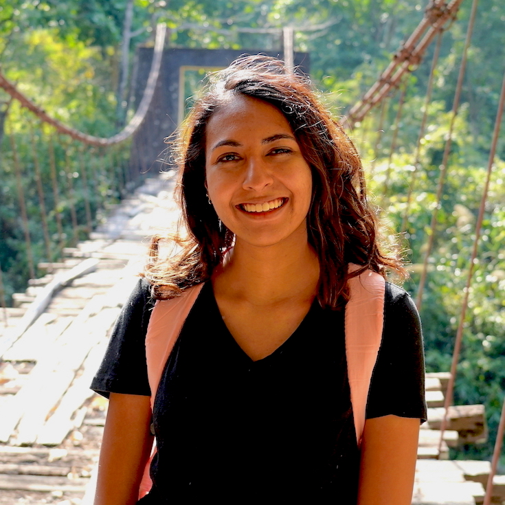

Hi! I am a final-year PhD candidate in Computer Science at Stanford University.
I am co-advised by Dan Boneh and Dorsa Sadigh.
I am also an AI Science Writer at Anthropic.
My research sits at the intersection of
machine learning, safety, and security,
with a focus on
overcoming both the computational and cognitive barriers in verifying modern AI systems.
I take an end-to-end approach to verification, including hardware-level auditing of neural networks, making model behaviors easier to evaluate, and strengthening the human expertise required to safely interact with learned policies.
My research is supported by the NSF GRFP and IBM PhD Fellowship, and has been recognized through an ICML Best Paper Runner-Up Award and the HRI Pioneers and ML Rising Stars programs. During my PhD, I have interned at Genesis Molecular AI, visited the LINGO lab at MIT, and collaborated closely with Stanford's Computation & Cognition Lab. I completed my undergrad in Computer Science and Creative Writing at Stanford, where I was a member of the Stanford NLP group and received the Ben Wegbreit Prize for Best Undergraduate Honors Thesis.
November 2026: Invited talk "Children of the Magenta Line: Building Learning-Aware Shared Autonomy with Cognitive Scaffolding" at the University of Washington Robotics Colloquium.
November 2026: Released our new preprint Pyrite: Building and Benchmarking Protein-Ligand Pose Ranking Agents.
October 2026: Presenting Proximal State Nudging: Reducing Skill Atrophy from AI Assistance at the Center for AI Safety Annual Meeting.
Summer 2026: Research Intern at Genesis Molecular AI on post-training for AI-assisted small molecule drug discovery.
June 2026: Presenting our paper Modeling Student Learning with 3.8 Million Program Traces which was accepted to AIED 2026 in Seoul, South Korea.
May 2026: Presenting our paper Hawkeye: Reproducing GPU-Level Non-Determinism, which was accepted to MLSys 2026 in Bellevue, WA.
April 2026: My data sonification project, working with dynamic hourly forest data (e.g. solar radiation, wind speed), won 1st place at Hubbard Brook Research Foundation's "Water and Climate" data competition!
January 2026: Our paper Training large language models on narrow tasks can lead to broad misalignment is published in Nature.
January 2026: Our paper Policy Learning with a Language Bottleneck is accepted to TMLR.
October 2025: Presenting work on AI assistance for pharmacovigilance as a spotlight at Agents4Science, an experimental conference exploring AI-assisted research! I wrote a blog post about the experience here.
August 2025: Attending CRYPTO 2025 in Santa Barbara.
March 2025: Presenting our paper Shared Autonomy for Proximal Teaching at HRI'25 in Melbourne, Australia.
January 2025: Invited talks about Optimistic Verifiable Training by Controlling Hardware Nondeterminism at both the Joint Mathematics Meeting (AI and Cryptography workshop) and University of Washington in Seattle.
December 2024: Presenting our paper Optimistic Verifiable Training by Controlling Hardware Nondeterminism at NeurIPS'24 in Vancouver.
November 2023: Presenting our paper Do Users Write More Insecure Code with AI Assistants? at CCS'23 in Copenhagen
July 2023: Presenting our paper Generating Language Corrections for Teaching Physical Control Tasks at ICML'23 in Honolulu.
March 2023: Visiting the Banff International Research Station for Mathematical Innovation and Discovery for the Research Directions in Number Theory WIN6 workshop.